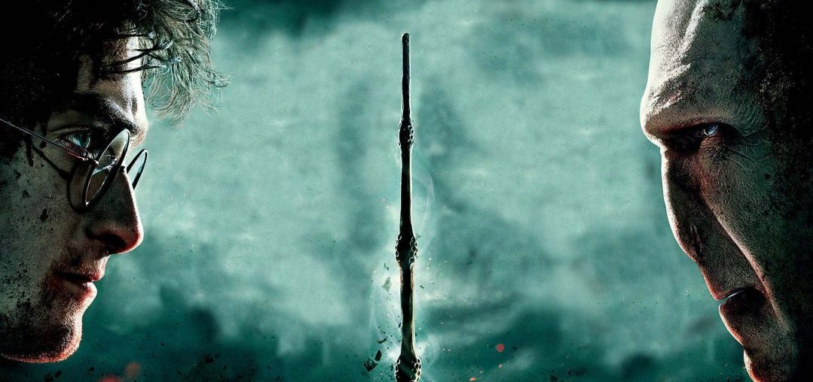

A saga "Harry Potter", escria por J.K. Rowling, é uma série de sete livros que narra a vida e as aventuras de um jovem bruxo chamado Harry Potter
A história começa quando Harry, um garoto órfão criado por seus tios, descobre que é um bruxo ao completar 11 anos e recebe um convite para estudar na Escola de Magia e Bruxaria de Hogwards.
A saga foi muito bem recebida, tornando-se um fenômeno cultural e gerando adaptações cinematográficas, peças de teatro e uma vasta gama de produtos relacionados. O impacto da história na literatura juvenil e na cultura pop é inegável, influenciando uma geração de leitores e fãs ao redor do mundo.
